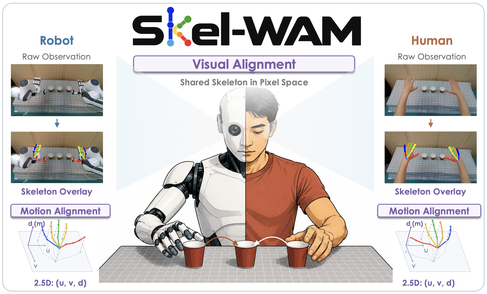

Skel-WAM: A Hand-Skeleton-Conditioned World Action Model for Human-to-Robot Manipulation Transfer
in submission
We introduce a hand-skeleton-conditioned world action model that transfers manipulation skills from human demonstrations to robots through a shared hand-skeleton interface.